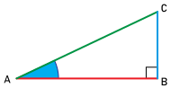

|
Chapitre 10
|
- Trigonométrie
|
Activité Introduction
- Construire un triangle ABC rectangle en B.
Fonctions trigonométriques :
Dans un triangle rectangle, lorsque l'on repére un angle aigu,
le rapport de longueur du côté adjacent à cette angle et de
l'hypoténuse est lié à la mesure de cette angle.
Il y a un lien entre les angles et
la longueurs des côtés du triangle.
On dit alors que le rapport de longueur varie en fonction de l'angle.

Un nom a été donné à cette fonction : le cosinus.
Dans un triangle rectangle, pour un angle « $\theta$ » aigu donné, on a :
$\cos(\theta)=\frac{côté\ \textcolor{#e53935}{adjacent}\ à\ l'angle}{\textcolor{#43a047}{hypoténuse}}$
Exemple :

$\cos(\hat{CAB})=\cos(72°)\approx0.309$
$\frac{AB}{AC}=\frac{30,9}{100}=0,309$
On obtient bien le même résultat ici.
Remarques :
- La fonction cosinus n'est pas exprimable, il faut donc obligatoirement utiliser la calculatrice.
- Le cosinus d'un angle aigu renvoie toujours une valeur entre 0 et 1.
Calcul d'une longueur dans un triangle rectangle :
- On commence par faire un schéma du triangle montrant la position de
l'hypothénuse et du côté adjacent à l'angle connu.
- On écrit l'égalité du cosinus et de rapport faisant intervenir le côté connu et le côté
que l'on souhaite calculer.
- On résout l'équation simple ainsi obtenue.
Exemple :
Soit ABC un triangle rectangle en A, tel que BC = 6cm et $\widehat{ABC} = 29°$. Calculer AB.
- On fait un schéma.

-
On écrit l'égalité trigonométrique qui lie les grandeurs.
$cos(\widehat{ABC})=\frac{BA}{BC}$ donc $cos(29)=\frac{BA}{6}$
-
On résoud :
$cos(29)=\frac{BA}{6}$ donc $\frac{cos(29)}{1}=\frac{BA}{6}$
On fait un produit en croix :
$BA = cos(29)\times6\div1\approx5,2cm$